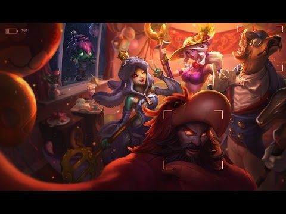

Imágenes de soraka:
Click aquí para ver imágenes de soraka (Pinterest)
Soraka, una nómada proveniente de las dimensiones celestiales más allá del monte Targon, dejó a un lado su inmortalidad para proteger a las razas mortale s de sus propios instintos asesinos. Su cometido es difundir las virtudes de la compasión y la misericordia entre todos los seres con los que se cruza, e incluso sanar a aquellos que desean hacerle daño. Pese a los problemas que ha presenciado Soraka hasta la fecha, sigue creyendo firmemente que los pueblos de Runaterra no han alcanzado todo su potencial.
1-Imágen del splash art de Soraka

Soraka en el videojuego League of Legends: Wild Rift (el League of Legends de móvil) cuenta con un splash art diferente.
2-Imágen del splash art de Soraka en Wild Rift
3-Listas de soraka
Skins de Soraka:
- Soraka Dríade
- Soraka Divina
- Soraka Celestial
- Soraka Segadora de almas
- Soraka Orden del Platano 
- Programa Soraka